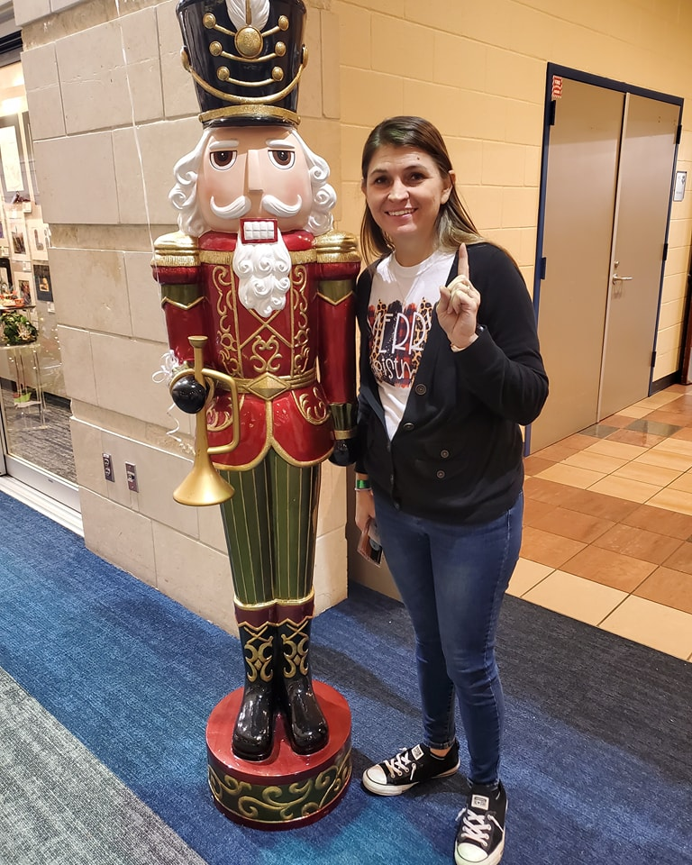
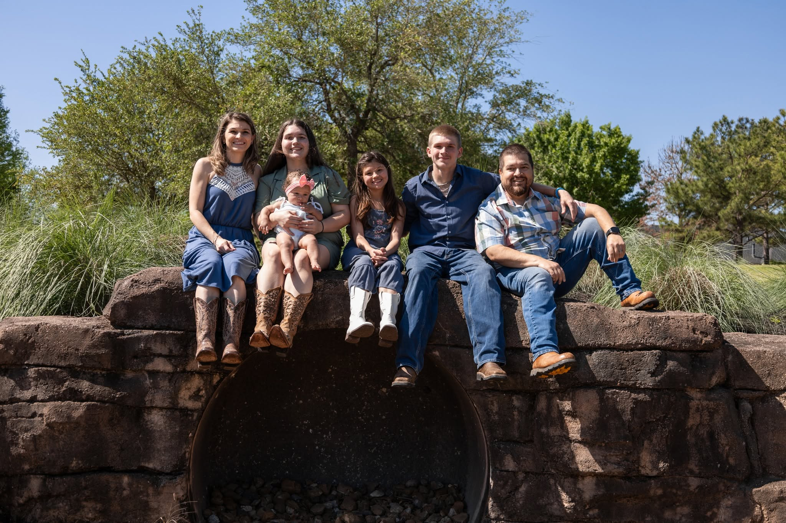

About Me
Hi, I'm Deleana.
Creative heart. People lover. Memory maker.
I'm the heart behind SIS Custom Creations, a mobile creative experience company built on passion, purpose, and the belief that creativity brings people together.
As a wife, mother, and proud Lolli, I know how quickly life moves and how precious the moments are. SIS is here to help others slow down, create something meaningful, and make memories that last.
Let's create something beautiful togetherMy Why
This is more than what I do. It is who I am.
I started SIS because I believe creativity has the power to heal, inspire, and bring people together. My mission is simple: help others create with purpose, connect on a deeper level, and celebrate the moments that matter.

They remind me that the best moments are the ones we slow down to share, make, and remember together.
About SIS
Creativity that brings people together.
At SIS Custom Creations, the vision is to create meaningful experiences where people can slow down, spend time together, and leave with something they are proud to have made.
From workshops and kids' parties to splatter paint experiences, fundraisers, custom creations, and DIY projects, SIS is built to inspire creativity, strengthen relationships, and celebrate people of all ages.
Like dandelion seeds carried by the wind, every SIS experience is meant to spread joy, spark creativity, and grow into lasting memories long after the event is over.
Our Future Goal
A welcoming creative studio, with mobile experiences still at the heart.
The dream is to one day open a studio where individuals, families, schools, churches, businesses, and community groups can gather for workshops, private parties, seasonal events, DIY projects, and creative celebrations.
As SIS grows, the mission stays the same: create a place where memories are made, relationships grow, creativity flourishes, and every guest feels like part of the SIS family.
Create. Connect. Celebrate.